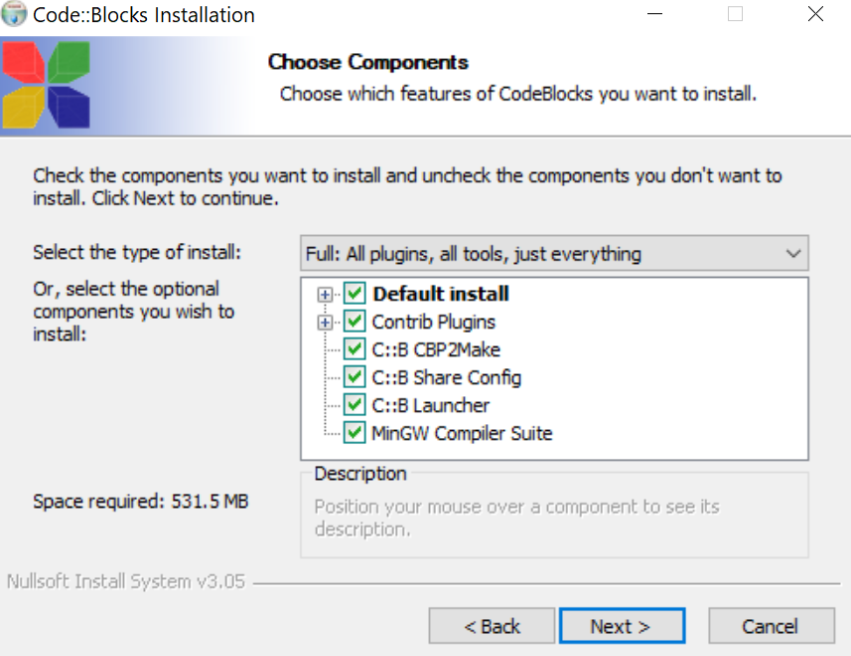

<< Home
Instalarea mediului de programare
- Instalăm Code::Blocks împreună cu un compilator de c++.
- Oare ce face un compilator?
- Lăsăm toate opțiunile bifate implicit

- Încă puțin și se poate deschide Code::Blocks
Crearea unui proiect nou de tip consolă
- Se creează pe desktop un folder nou cu numele vostru (acesta va fi folderul de lucru în care se găsesc toate proiectele)
- Crearea unui proiect nou de tip consolă
- Selectăm "Console Application"
- Selectăm "C++"
- Alegem un titlu de proiect în Project title
- În căsuța Folder to create project in selectăm folderul cu numele elevului de pe desktop
- Finish
- În bara din stânga avem un explorer al proiectelor deschise
- În directorul Sources se găsește sursa de cod cu extensia .cpp
- Pentru început nu trebuie să înțelegeți toate elementele din cod. Acestea vor fi explicate pas cu pas în lecțiile următoare.
- Pentru a rula programul apăsăm tasta F9 (sau Fn + F9 pentru tastaturile care au F9 scris mic sus).
- Alternativ se poate rula apăsând pe rotița cu play din meniul de sus.
- În acest moment se deschide consola în care apare mesajul “Hello world!”.
- Consola se poate închide cu X după terminarea programului.
- Dacă modificăm linia de instrucțiune 7 și între ghilimele scriem un alt mesaj, acesta va apărea în consolă la următoarea rulare.
Ce este consola? Cum comunică un calculator?
- Orice mașină de calcul comunică cu utilizatorii printr-o interfață. Programele au diferite interfețe. Cele mai cunoscute interfețe sunt GUI (Graphical User Interface) care folosesc mouse-ul și tastatura ca principal mijloc de comunicare input și elementele grafice ca mijloc de comunicare output.
- Input și output? ce înseamnă?
- Aplicațiile pe care le vom crea în c++ în primă fază for folosi o interfață de tip consolă. Această interfață permite comunicarea cu calculatorul doar prin intermediul textului introdus (input) sau afișat (output) în consolă.
- Se rulează următorul program ca exemplu, fără a explica codul din spate (doar funcționarea este esențială).
#include <iostream>
using namespace std;
int main()
{
cout << "introdu orice numar>>";
int nr;
cin >> nr;
if ( nr % 2 == 0){
cout << "numarul " << nr << " este par!" << endl;
}else{
cout << "numarul " << nr << " este impar!" << endl;
}
return 0;
}
Aplicații
- Salut, Andrei!
- Se importă biblioteca
<string>.
- Se declară o variabilă
string nume;
- Se citește variabila de la tastatură, citirea este însoțită mereu de un mesaj sugestiv.
- Se afișează conținutul variabilei împreună cu mesajul de salut.
- Din nou, nu trebuie să înțelegeți toate elementele din cod. Este suficient să urmăriți fluxul de input și output al programului.
#include <iostream>
#include <string>
using namespace std;
int main()
{
string nume;
cout << "cum te cheama?" << endl << ">>";
cin >> nume;
cout << "Salut, " << nume << "!" << endl;
return 0;
}
- ASCII Art
- veți afișa în consolă tot felul de desene construite din caractere ASCII (litere, cifre și simboluri).
- se poate accesa site-ul ASCII Art Archive de unde se pot alege modele.
- fiecare linie trebuie copiată (CTRL+C) din construcțiile ASCII ART și introdusă (CTRL+V) între ghilimelele de la
cout << "----" >> endl; ca în exemplul de mai jos.
#include <iostream>
#include <string>
using namespace std;
int main()
{
cout << " /\\_____/\\" << endl;
cout << " / o o \\" << endl;
cout << " ( == ^ == )" << endl;
cout << " ) (" << endl;
cout << " ( )" << endl;
cout << " ( ( ) ( ) )" << endl;
cout << "(__(__)___(__)__)" << endl;
return 0;
}
- Mare atenție! Unele caractere cum ar fi
“ \ ; ‘
aparțin sintaxei c++.
- Astfel, compilatorul le interpretează ca elemente de cod. Pentru a evita astfel de erori, înaintea oricărui astfel de caracter se poate pune un
\ (escape character) pentru a anula efectul sintactic al respectivului caracter.
- Compilatorul vă sugerează cu roșu linia la care s-a întâlnit o eroare.
- De exemplu, se observă cum în c++ între ghilimele se scrie un text (string). Dar dacă imaginea noastră ASCII ART conține ghilimele, asta va genera o eroare de sintaxă în cod. Dacă punem un \ înainte de “ efectul lor de delimitator de string va dispărea.
- Se observă cum în exemplu, fiecare \ este precedat de un alt \ care îi anulează efectul.
- În consolă, acel caracter \ pus în plus nu mai apare.